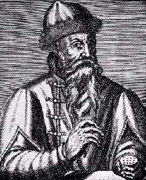

Борис Акунин
Мой календарь
И я имею в виду совсем не годовщину создания Красной Армии. Самый главный праздник для меня как для писателя и для вас, если вы читатели, - рождение Книги.
А она родилась именно сегодня. 23 февраля 1455 года немецкий изобретатель Иоганн Гутенберг впервые выпустил книгу, которую можно было тиражировать.
Гений придумал вырезать из металла буквы в зеркальном отображении, составлять их в строки и делать оттиск на бумаге.
Благодарное потомство не сохранило даже портрета Иоганна, и точные годы его жизни тоже неизвестны.
Ну вот где бы мы с вами были без Гутенберга?
Допустим, написал бы я роман про Эраста Фандорина. Гусиным пером. И что потом? Отдал бы монастырским переписчикам? Устраивал публичные чтения вслух за входную плату? Можно, конечно, но с Гутенбергом лучше.
Спасибо, Иоганн Генсфляйш цур Ладен цум Гутенберг и за мое счастливое детство, проведенное за чтением книг, и за мои преклонные годы, проведенные в их написании.
Сегодня обязательно прочитайте что-нибудь печатное. Только не с монитора, а на бумаге! Возьмите в руки книгу и поцелуйте ее. Не бойтесь сентиментальности.